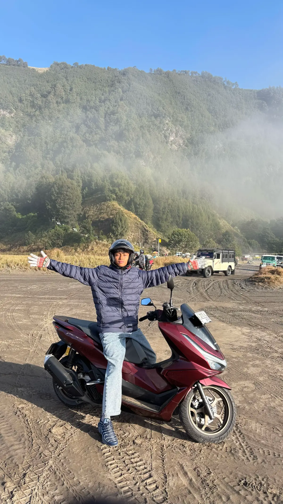

HTML & CSS
Semantic UI & Layouting, Flexbox, CSS Grid.
Siswa Kelas XII - Peminatan Rekayasa Perangkat Lunak / Informatika
Selamat datang di portofolio digital saya. Website ini merupakan etalase digital untuk mendokumentasikan tugas, galeri karya, dan praktikum selama tahun ajaran berjalan.

Kompetensi yang dipelajari dan dikuasai.
Semantic UI & Layouting, Flexbox, CSS Grid.
IP Address, Subnetting, Topologi & Cisco Packet Tracer.
C/C++ & Algoritma Logika Pemrograman.
Troubleshooting Perangkat Keras & Analisis Sistem.